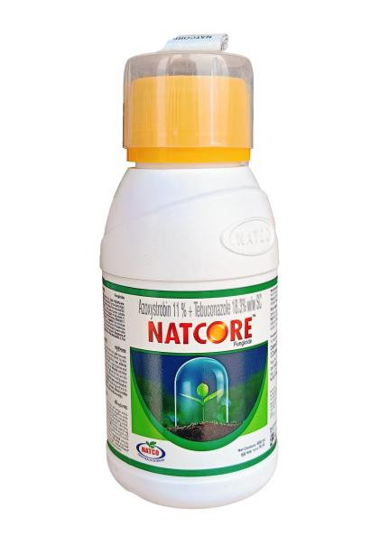

Technical Name: Azoxystrobin 11% + Tebuconazole 18.3% SC
Mode of Action: Azoxystrobin: Works by inhibiting mitochondrial respiration, disrupting fungal growth and reproduction. Tebuconazole: Inhibits sterol biosynthesis, affecting cell membrane formation and fungal growth.
Major Crops:
Cereals: Wheat, Barley, Maize
Fruits: Apples, Grapes, Citrus
Vegetables: Tomatoes, Potatoes, Peppers
Legumes: Beans, Peas
Oilseeds: Soybeans, Sunflower
Target Pests: Leaf rust, Powdery mildew, Septoria leaf blotch, Apple scab, Grape downy mildew, Citrus canker, Late blight in Potatoes, Downy mildew in Cucumbers and Tomatoes, Rusts, Mildew.
Presentation Available: 500 ml, 1 L
Company: Natco